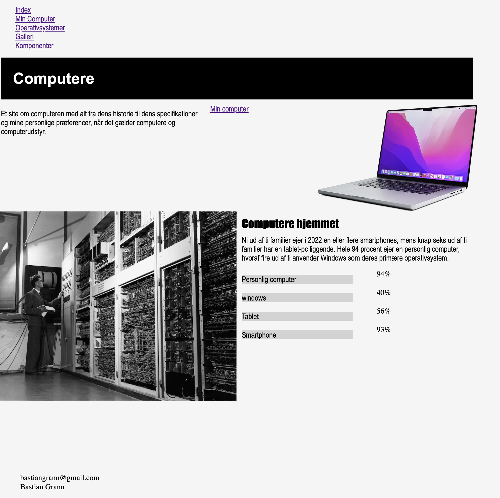
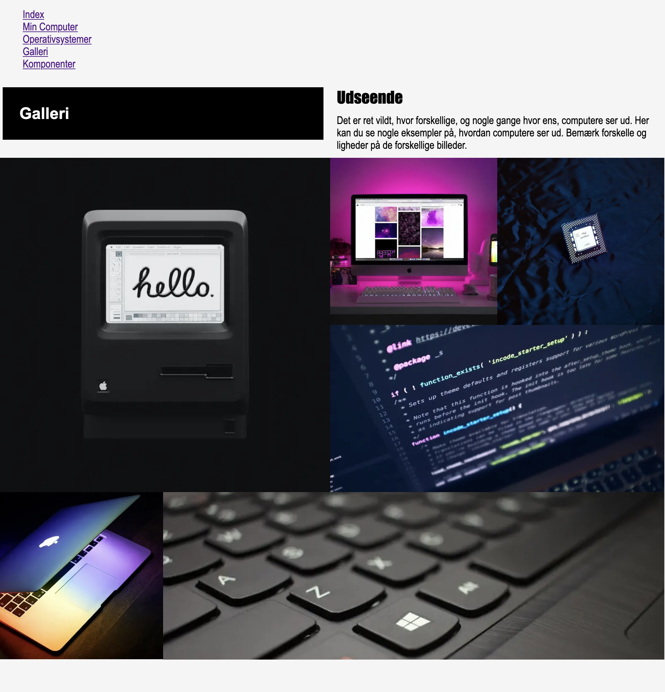

Tema 2
Websitets formål var at indtroducere en videreføring fra mobilsite til website
Opgaven krævede forståelse af både classes, wireframes og layoutdiagrammer. Sitet blev sat ordenlig op vha. grids, padding og flexboxes, som alle er gennemgående værktøjer for følgende opgaver
Indexside
grid 2-1 & grid 1-1
Galleriside
Billedeopsætning
